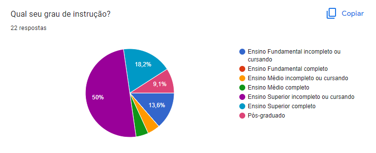
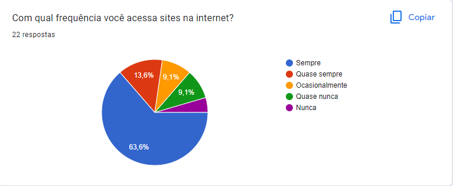
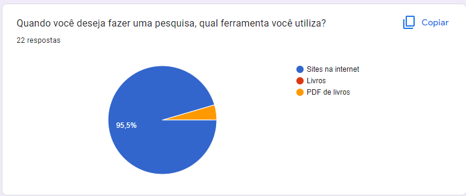
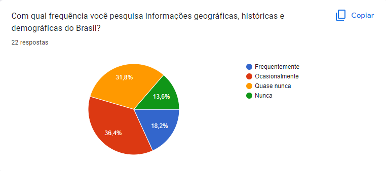

Perfil de Usuário
1. Introdução
Com o objetivo de aumentar o conhecimento sobre os usuários do sistema, uma técnica muito utilizada é o registro do Perfil do Usuário. Sendo assim, este perfil nos ajuda compreender um pouco mais sobre as características destes usuários, respondendo perguntas como quem são, quais seus objetivos, e também, coletando dados demográficos deles. Desta forma, o perfil de usuário irá compor uma descrição detalhada das características dos usuários que irão utilizar o sistema.
2. Metodologia
Para a elaboração do Perfil de Usuário optamos pelo uso de questionários online, utilizando a plataforma do Google Forms, para que dessa forma possamos coletar dados de um maior número de usuários. Dessa maneira, levando em conta que as características de um perfil de usuário devem ser priorizadas conforme o projeto em questão, decidimos coletar os seguintes dados a partir das respostas das seguintes perguntas:
- Qual a sua idade?
- Qual o seu grau de instrução?
- Com qual frequência você acessa sites na internet?
- Quando você deseja fazer uma pesquisa, qual ferramenta você utiliza?
- Com qual frequência você pesquisa informações geográficas, históricas e demográficas do Brasil?
- Com qual frequência você utiliza sites governamentais?
- Como você classificaria a facilidade para encontrar os sites governamentais que deseja utilizar?
- Quais caracteríscas você considera mais importantes em sites de pesquisa?
3. Respostas
3.1 Questão 1

A partir das repostas podemos concluir que o houve um equilíbrio entre as idades dos participantes deste questionário. Desta formo, levando-nos a concluir que este site pode ser utilizado tanto para pessoas mais jovens, quanto mais velhas.
3.2 Questão 2

Com a segunda pergunta concluimos que estudantes universitários cursando e já formados e estudantes do ensino fundamental são os principais grupos de usuários.
3.3 Questão 3

Com estes resultados, podemos assumir que o usuário padrão é alguem que tem o acesso à internet e pelo menos algum nível de experiência com ela.
3.4 Questão 4

Como esperado, os usuários consideram a internet como sua principal fonte de informações para pesquisas.
3.5 Questão 5

Aqui podemos ver uma boa divisão entre os participantes, com a maioria respondendo que ocasionalmente pesquisam sobre dados do Brasil.
3.6 Questão 6

Com a sexta pergunta percebemos que uma baixa porcentagem dos participantes nunca utilizou sites governamentais, mostrando assim que estes são um importante foco para o sistema.
3.7 Questão 7

A partir destes dados, vemos que uma significativa parcela dos que responderam possuem algum tipo de dificuldade em encontrar sistes governamentais. Assim, destacando ainda mais a importância destes para o usuário.
3.8 Questão 8

Por fim, com a questão 8 podemos perceber que para os usários, em um site de pesquisa as ferramentas funcionais e a facilidade utilização são as características mais importantes.
4. Resultados
A partir dos resultados do questionários teremos uma base de dados significativa para determinar os perfis de nossos usuários e especifíca-los por meio de personas, para que assim possamos focar nos requisitos que atenderão suas necessidades.
Histórico de versão
| Versão | Alteração | Responsável | Revisor | Data |
|---|---|---|---|---|
| 1.0 | Criação do documento | Lucas | 16/07/2022 |
Referências
- BARBOSA, Simone; SILVA, Bruno. Interação Humano Computador. Rio de Janeiro. Elsevier Editora Ltda. 2010